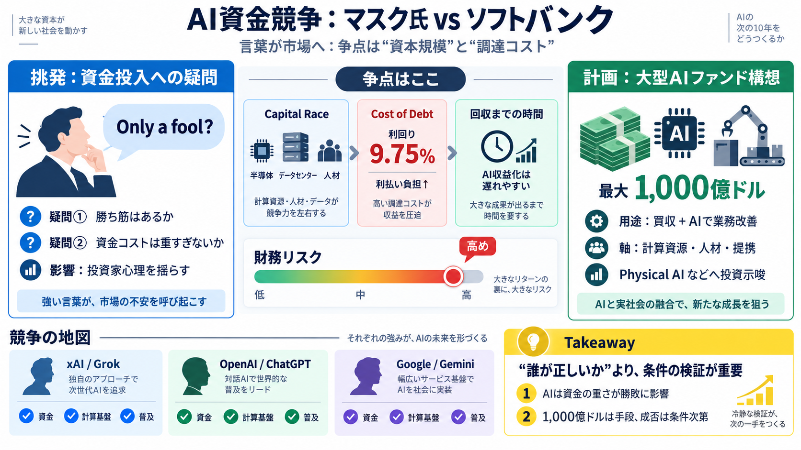

SoftBank launches $11 billion bond sale for AI expansion
SoftBank owns roughly 13% of OpenAI — worth over $100 billion at the company's $852 billion private valuation. It tried …

AI資金競争：言葉が市場へ
巨額ファンド計画の報道に対し、マスク氏は「金を出すのは愚か者」と強く反応。焦点は「AIに必要な資本」と「調達コスト（資金の重さ）」です。
問い：勝負は資金に移った？
AI競争はモデル開発だけでなく、計算資源（半導体・クラウド/データセンター）、人材、買収・提携まで「資本」で動きます（資金競争：Capital Race）。
発言：愚か者という警鐘
マスク氏は、ソフトバンクの「最大1,000億ドル規模のAIファンド」構想に対し、「Only a fool would give them money」と投稿し資金投入の合理性を疑問視しました。
計画：ファンドで“買って育てる”
報道では、ソフトバンクは湾岸投資家（UAEなど）と協議し、AI活用を軸に買収・業務改善を進めるための大型ファンドを組成する構想とされています。
違い：口先だけではない
マスク氏の挑発は単なる悪口ではなく、「勝ち筋（事業計画）」と「調達設計（財務条件）」の両方に疑念を投げる形です。
数字：高利回り調達が論点
報道によれば、ソフトバンクは直近で高利回り（利回り9.75%とされる）で11Bドル超を調達したとされ、投資家は「賭けの重さ」と返済・運用の難易度を懸念しています。
集中リスク：同じ方向に賭ける
ソフトバンクはすでにOpenAIに巨額コミット（例として数十億ドル規模が言及）しているとされ、追加ファンドが同じ勝ち筋へ偏るとリスク集中になり得ます。
競争の地図：xAIも進む
マスク氏はxAI（Grok）を進め、OpenAI（ChatGPT）やGoogle（Gemini）に対抗する姿勢を示しており、資金・計算基盤・普及（エコシステム）が競争の軸になります。
結論の出し方：条件が鍵
現時点の情報では、最大1,000億ドルの「確定条件・実行タイムライン」が不明で、投資判断の結論は早すぎます。
Takeaway：論点を見抜く
このニュースは「誰が正しいか」より、「資本規模」と「調達コストが財務リスクをどう形作るか」を理解する材料です。発言は強いが、最終判断は条件の検証で決まります。
SoftBank owns roughly 13% of OpenAI — worth over $100 billion at the company's $852 billion private valuation. It tried …
SoftBank's AI Funding Plans to Face Reckoning at Earnings # SoftBank's AI Funding Plans to Face Reckoning at Earnings …
SoftBank OpenAI investment | $22.5 billion funding OpenAI | Masayoshi Son AI bet | OpenAI Sam Altman | AI race global | …
The head of SoftBank's $100bn Vision Fund has lined up billions of dollars of outside investment for a new hedge fund-st…
By Investing.co... Oct 07, 2026 Image 13 Image 14 Chip stock could soar nearly 200%, analyst says: "If you don’t buy…